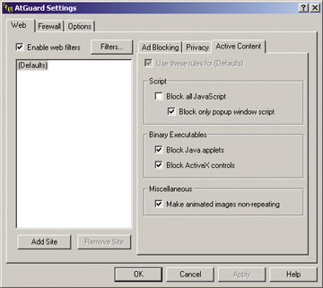
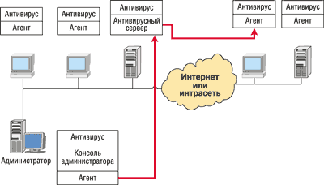
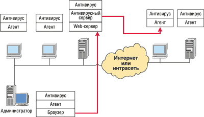

Александр Фролов, Григорий Фролов
alexandre@frolov.pp.ru; http://www.frolov.pp.ru,
http://www.datarecovery.ru
В предыдущей статье, посвященной антивирусной защите*, мы рассмотрели основные типы вирусов и способы их распространения. Теперь, основываясь на этих знаниях, обсудим способы защиты от вирусов, троянских и других вредоносных программ.
* См. "Что нужно знать о компьютерных вирусах". "BYTE/Россия", № 8'2002.
Программно-технические методы обнаружения вирусов
Основным средством борьбы с вирусами были и остаются антивирусные программы. Безусловно, их можно использовать, не имея представления о том, как они устроены. Однако без понимания принципов устройства антивирусов, знания типов вирусов и способов их распространения нельзя организовать надежную защиту компьютера.
Сегодня используется несколько основных методик обнаружения и защиты от вирусов:
- сканирование;
- эвристический анализ;
- использование антивирусных мониторов;
- обнаружение изменений;
- использование антивирусов, встроенных в BIOS компьютера.
Кроме того, практически все антивирусные программы обеспечивают автоматическое восстановление зараженных программ и загрузочных секторов (конечно, если это возможно).
Сканирование
Самая простая методика поиска вирусов заключается в том, что антивирусная программа последовательно просматривает проверяемые файлы в поиске сигнатур известных вирусов. Под сигнатурой понимается уникальная последовательность байтов, принадлежащая вирусу и не встречающаяся в других программах.
Антивирусные сканеры способны найти только уже известные вирусы, для которых определена сигнатура. Применение простых программ-сканеров не защищает компьютер от проникновения новых вирусов.
Для шифрующихся и полиморфных вирусов, способных полностью изменять свой код при заражении новой программы или загрузочного сектора, невозможно выделить сигнатуру, поэтому антивирусные сканеры их не обнаруживают.
Эвристический анализ
Эвристический анализ позволяет обнаруживать неизвестные ранее вирусы, причем для этого не надо собирать данные о файловой системе (как этого требует, например, рассмотренный ниже метод обнаружения изменений).
Антивирусные программы, реализующие метод эвристического анализа, проверяют программы и загрузочные секторы дисков и дискет, пытаясь обнаружить в них код, характерный для вирусов. Эвристический анализатор может обнаружить, например, что проверяемая программа устанавливает резидентный модуль в памяти или записывает данные в исполнимый файл программы. Практически все современные антивирусные программы реализуют собственные методы эвристического анализа. В качестве примера такой программы назовем сканер McAffee VirusScan.
Обнаружив зараженный файл, антивирус обычно выводит сообщение на экране монитора и делает запись в собственном или системном журнале. В зависимости от настроек, антивирус может также направлять сообщение об обнаруженном вирусе администратору сети.
Если это возможно, антивирус вылечивает файл, восстанавливая его содержимое. В противном случае предлагается только одна возможность - удалить зараженный файл и восстановить его из резервной копии.
Антивирусные мониторы
Существует целый класс антивирусных программ, которые постоянно находятся в памяти компьютера и отслеживают все подозрительные действия, выполняемые другими программами. Такие программы носят название антивирусных мониторов, или сторожей.
Монитор автоматически проверяет все запускаемые программы, создаваемые, открываемые и сохраняемые документы, файлы программ и документов, полученные через Интернет или скопированные на жесткий диск с дискеты либо компакт диска. Антивирусный монитор сообщит пользователю, если какая-либо программа попытается выполнить потенциально опасное действие.
Пример такой программы - сторож Spider Guard, который входит в комплект сканера Doctor Web, разработанного Игорем Даниловым (http://www.drweb.ru), и выполняет функции антивирусного монитора.
Обнаружение изменений
Заражая компьютер, вирус изменяет содержимое жесткого диска: например, дописывает свой код в файл программы или документа, добавляет вызов программы-вируса в файл AUTOEXEC.BAT, изменяет загрузочный сектор, создает файл-спутник. Однако "бестелесные" вирусы, обитающие не на диске, а в памяти процессов ОС, таких изменений не делают.
Антивирусные программы, называемые ревизорами диска, не выполняют поиск вирусов по сигнатурам. Они запоминают предварительно характеристики всех областей диска, которые могут подвергнуться нападению, а затем периодически проверяют их (отсюда и название - программы-ревизоры). Ревизор может найти изменения, сделанные как известным, так и неизвестным вирусом.
В качестве примеров ревизоров диска можно привести программу Advanced Diskinfoscope (ADinf), разработанную в ЗАО "ДиалогНаука" (http://www.dials.ru, http://www.adinf.ru), и ревизор AVP Inspector производства ЗАО "Лаборатория Касперского" (http://www.kaspersky.ru).
Вместе с ADinf применяется лечащий модуль ADinf Cure Module (ADinfExt), который использует собранную ранее информацию о файлах для их восстановления после поражения неизвестными вирусами. В состав ревизора AVP Inspector также входит лечащий модуль, способный удалять вирусы.
Защита, встроенная в BIOS компьютера
В системные платы компьютеров тоже встраивают простейшие средства защиты от вирусов. Эти средства позволяют контролировать все обращения к главной загрузочной записи жестких дисков, а также к загрузочным секторам дисков и дискет. Если какая-либо программа пытается изменить содержимое загрузочных секторов, срабатывает защита, и пользователь получает соответствующее предупреждение.
Однако эта защита не очень надежна. Существуют вирусы (например, Tchechen.1912 и 1914), которые пытаются отключить антивирусный контроль BIOS, изменяя некоторые ячейки в энергонезависимой памяти (CMOS-памяти) компьютера.
Защита корпоративной интрасети
Корпоративная интрасеть может насчитывать сотни и тысячи компьютеров - рабочих станций и серверов. Эта сеть обычно подключена к Интернету, и в ней имеются почтовые серверы, серверы систем автоматизации документооборота, а также нестандартные информационные системы.
Для надежной защиты корпоративной интрасети необходимо установить антивирусы на все рабочие станции и серверы. Что касается рабочих станций, их можно защитить обычными антивирусными сканерами и мониторами. На файл-серверах, серверах электронной почты и систем документооборота следует использовать специальное серверное антивирусное ПО. В частности, для них разработаны специальные антивирусные прокси-серверы и брандмауэры, сканирующие проходящий через них трафик и удаляющие из него вредоносные программные компоненты.
Защита файловых серверов
Защита файловых серверов должна осуществляться с использованием антивирусных мониторов, способных автоматически проверять все файлы сервера, к которым обращаются по сети. Антивирусы, предназначенные для защиты файловых серверов, выпускают все антивирусные компании.
Защита почтовых серверов
Антивирусные мониторы неэффективны для обнаружения вирусов в почтовых сообщениях. Для этого необходимы специальные антивирусы, способные фильтровать трафик SMTP, POP3 и IMAP, исключая попадание зараженных сообщений на рабочие станции пользователей.
Для защиты почтовых серверов можно приобрести антивирусы, специально предназначенные для проверки почтового трафика, или подключить к почтовому серверу обычные антивирусы, допускающие работу в режиме командной строки.
Демон антивируса Doctor Web можно интегрировать со всеми наиболее известными почтовыми серверами и системами (например, Doctor ComminiGatePro, Sendmail, Postfix, Exim, QMail и Zmailer). Аналогичные средства предоставляются "Лабораторией Касперского" в составе пакета Kaspersky Corporate Suite.
Почтовый сервер MERAK Mail Server допускает подключение внешних антивирусов различных типов, имеющих интерфейс командной строки. Некоторые почтовые серверы (например, EServ) поставляются со встроенным антивирусом.
Можно также дополнительно проверять трафик POP3 на рабочих станциях пользователей. Это делает, например, антивирусный прокси-сервер SpIDer Mail для протокола POP3, который можно приобрести вместе с антивирусом Doctor Web.
Защита серверов систем документооборота
Серверы систем документооборота, такие, как Microsoft Exchange и Lotus Notes, хранят документы в базах данных собственного формата. Поэтому использование обычных файловых сканеров для антивирусной проверки документов не даст никаких результатов.
Существует ряд антивирусных программ, специально предназначенных для антивирусной защиты подобных систем. Это Trend Micro ScanMail для Lotus Notes, McAfee GroupScan и McAfee GroupShield, Norton Antivirus для Lotus Notes, антивирус Касперского Business Optimal для Microsoft Exchange Server и некоторые другие.
Эти программы сканируют почту и файлы вложений, удаляя в реальном времени все вредоносные программы, обнаруживают макрокомандные вирусы и троянские программы в формах и макросах, в файлах сценариев и в объектах OLE. Проверка выполняется в режиме реального времени либо по требованию.
Защита нестандартных информационных систем
Для антивирусной защиты нестандартных систем, хранящих данные в собственных форматах, необходимо либо встраивать антивирусное ядро в саму систему, либо подключать внешний сканер, работающий в режиме командной строки.
Например, ядро антивируса Doctor Web было использовано в ФГУП "НПО машиностроения" для защиты системы документооборота, созданной на базе собственной технологии Sapiens (http://www.npomit.ru). Это ядро проверяет всю информацию, сохраняемую системой в базе данных.
Как разработчик информационных систем для ответственного применения "НПО машиностроения" снабдило антивирусной защитой такие свои разработки, как "Sapiens Регистрация и контроль исполнения документов", "Sapiens Мониторинг вычислительных ресурсов", "Sapiens Электронный архив конструкторской документации".
Установка персональных брандмауэров
Корпоративная сеть, подключенная к Интернету, должна быть защищена от атак хакеров при помощи брандмауэра. Однако можно дополнительно защитить рабочие станции и серверы сети, установив на них персональные брандмауэры, такие, как AtGuard (рис. 1).
|  | Рис. 1. Настройка персонального брандмауэра AtGuard.
|
Помимо фильтрации нежелательного трафика, некоторые персональные брандмауэры способны защитить компьютер от троянских апплетов Java и элементов управления ActiveX. Такие компоненты могут быть встроены в почтовые сообщения формата HTML и в страницы троянских Web-сайтов.
Персональные брандмауэры, находящиеся в так называемом режиме обучения, могут оказать помощь в обнаружении трафика от троянских программ, логических бомб и других нежелательных вредоносных компонентов. Когда такой компонент попытается установить связь с компьютером хакера, брандмауэр отобразит на экране предупреждающее сообщение.
Следует заметить, что в настройках браузера можно запретить использование активных компонентов, таких, как апплеты Java и элементы управления ActiveX. Однако персональные брандмауэры более универсальны и позволяют блокировать использование таких компонентов любыми программами, например, почтовыми клиентами.
Сетевой центр управления антивирусами
Если интрасеть насчитывает сотни и тысячи компьютеров, то необходимо централизованное удаленное управление антивирусными программами и контроль их работы. Выполнять в "ручном" режиме такие операции, как отслеживание обновлений антивирусной базы данных и загрузочных модулей антивирусных программ, контроль эффективности обнаружения вирусов на рабочих станциях и серверах и т. п., затруднительно, если в сети много пользователей или если сеть состоит из территориально удаленных друг от друга сегментов.
Если же не обеспечить своевременное и эффективное выполнение перечисленных выше операций, технология антивирусной защиты корпоративной сети обязательно будет нарушена, что рано или поздно приведет к вирусному заражению. Например, пользователь может неправильно настроить автоматическое обновление антивирусной базы данных или просто выключить компьютер в то время, когда выполняется такое обновление.
В современных антивирусных системах реализованы следующие функции удаленного управления и контроля:
- установка и обновление антивирусных программ и антивирусных баз данных;
- централизованная дистанционная установка и настройка антивирусов;
- автоматическое обнаружение новых рабочих станций, подключенных к корпоративной сети, с последующей автоматической установкой на эти станции антивирусных программ;
- планирование заданий (таких, как обновление программ, обновление антивирусной базы данных, сканирование файлов и т. п.) для немедленного или отложенного запуска на любых компьютерах сети;
- отображение в реальном времени процесса работы антивирусов на рабочих станциях и серверах сети.
Все перечисленные выше функции или многие из них реализованы в сетевых центрах управления ведущих корпоративных антивирусных продуктов, созданных компаниями Sophos (http://www.sophos.com), Symantec (http://www.symanteс.ru), Network Associates (http://www.nai.com) и "Лаборатория Касперского".
Сетевые центры управления позволяют управлять антивирусной защитой всей сети с одной рабочей станции системного администратора. Для ускорения установки антивирусов в удаленных сетях, подключенных к основной сети по медленным каналам связи, в этих сетях создаются собственные локальные дистрибутивные каталоги.
При использовании клиент-серверной архитектуры основой сетевого центра управления служит антивирусный сервер, установленный на одном из серверов корпоративной сети. С ним взаимодействуют, с одной стороны, программы-агенты, установленные вместе с антивирусами на рабочих станциях сети, а с другой стороны - управляющая консоль администратора антивирусной защиты (рис. 2).
|  | Рис. 2. Взаимодействие консоли администратора, агентов и антивирусного сервера.
|
Антивирусный сервер выполняет управляющие и координирующие функции. Он хранит общий журнал событий, имеющих отношение к антивирусной защите и возникающих на всех компьютерах сети, список заданий и расписание их выполнения. Антивирусный сервер отвечает за прием от агентов и передачу администратору антивирусной защиты сообщений о возникновении тех или иных событий в сети, периодически проверяет конфигурацию сети с целью обнаружения новых рабочих станций или рабочих станций с изменившейся конфигурацией антивирусных средств и т. д.
Помимо агентов, на каждой рабочей станции и сервере корпоративной сети устанавливается антивирус, выполняющий сканирование файлов и проверку файлов при их открытии. Результаты работы антивируса передаются через агентов антивирусному серверу, который их анализирует и протоколирует в журнале событий.
Управляющая консоль может представлять собой стандартное приложение Microsoft Windows с оконным интерфейсом или апплет (snap-in) управляющей консоли Control Panel ОС Microsoft Windows. Первый подход реализован, например, в управляющей системе антивирусов Sophos, а второй - в управляющей системе Norton AntiVirus.
Пользовательский интерфейс управляющей консоли позволяет просматривать древовидную структуру корпоративной сети, получая при необходимости доступ к отдельным компьютерам тех или иных групп пользователей или доменов.
Многоуровневые системы с Web-интерфейсом
Архитектура таких систем предполагает использование Web-сервера в качестве ядра системы. В задачи этого ядра входит, с одной стороны, организация диалогового интерактивного взаимодействия с пользователем, а с другой - с программными модулями той или иной системы.
Преимущество такого подхода - унификация способов управления различными системами сети; кроме того, не требуется устанавливать на рабочую станцию администратора управляющие программы или консоли. Администрирование может выполняться с любого компьютера сети, а если она подключена к Интернету, то из любого места земного шара, где есть Интернет и компьютер с браузером. Для защиты управляющей информации при ее передаче по Интернету или корпоративной интрасети применяются протоколы SSH или аналогичные средства (например, собственные защищенные модификации протокола HTTP).
На рис. 3 показана структурная схема системы антивирусной защиты с Web-интерфейсом (на примере Trend Virus Control System). Эта система позволяет полностью управлять и контролировать работу корпоративной системы антивирусной защиты с одной рабочей станции через браузер, даже если отдельные фрагменты сети находятся в разных странах или на разных континентах.
|  | Рис. 3. Антивирусная система с Web-интерфейсом.
|
Эта схема аналогична той, что приведена на рис. 2. Различие между ними в том, что администратор антивирусной защиты управляет ее работой через браузер, а не через консольное приложение.
На рабочих станциях устанавливается антивирус (PC-cillin, Server Protect, InterScan VirusWall, ScanMail и т. д.), который управляется антивирусным сервером через агента.
На компьютере, играющем роль антивирусного сервера, устанавливается Web-сервер Microsoft IIS. Работающее на нем специальное Web-приложение управляет антивирусным сервером и предоставляет администратору пользовательский интерфейс для управления системой антивирусной защиты.
Чтобы обеспечить максимальную независимость от компьютерной платформы, сервер Trend VCS Server и клиентское приложение написаны на языке программирования Java и других языках, применяющихся для разработки приложений Интернета.
Что же касается извещений о возникновении событий, то они передаются программами-агентами серверу Trend VCS Server и рассылаются по электронной почте, по пейджинговым сетям, в виде SMS и т. п.
Административно-технологические методы защиты
Чтобы антивирусные программы эффективно выполняли свои функции, необходимо строго соблюдать рекомендации по их применению, описанные в документации. Особое внимание следует обратить на регулярное обновление вирусных баз данных и программных компонентов антивирусов. Современные антивирусы могут загружать файлы обновлений через Интернет или по локальной сети, однако для этого их необходимо соответствующим образом настроить.
Однако даже в отсутствие антивирусных программ можно постараться предотвратить проникновение вирусов в компьютер и уменьшить вред, который они нанесут в случае заражения. Вот что следует для этого сделать в первую очередь.
- Блокируйте возможные каналы проникновения вирусов: не подключайте компьютер к Интернету и локальной сети компании, если в этом нет необходимости, отключите устройства внешней памяти, такие, как дисководы для дискет и устройства CD-ROM.
- Настройте параметры BIOS таким образом, чтобы загрузка ОС выполнялась только с жесткого диска, но не с дискет.
- Запретите программное изменение содержимого энергонезависимой памяти BIOS.
- Изготовьте системную загрузочную дискету, записав на нее также антивирусы и другие системные утилиты для работы с диском, а также диск аварийного восстановления Microsoft Windows.
- Устанавливайте ПО только с лицензионных компакт-дисков, ограничьте обмен программами и дискетами.
- Установите на всех дискетах защиту от записи и снимайте ее только в случае необходимости.
- Устанавливайте минимально необходимые права доступа к каталогам файлового сервера, защищайте от записи каталоги дистрибутивов и программных файлов.
- Регулярно выполняйте резервное копирование данных.
- Составьте для пользователей инструкцию по антивирусной защите, описав в ней правила использования антивирусов, правила работы с файлами и электронной почтой, а также опишите действия, которые следует предпринять при обнаружении вирусов.
Проблема домашних компьютеров
Часто сотрудники компаний работают не только в офисе, но и дома, перенося файлы между домашним компьютером и офисной рабочей станцией. Системный администратор компании не в состоянии защитить от вирусов все домашние компьютеры сотрудников. Вирусы могут попасть на домашний компьютер из Интернета, в результате обмена игровыми программами и т. д. Зачастую это происходит, если к домашнему компьютеру имеют доступ другие члены семьи, особенно дети.
Все файлы, которые сотрудники приносят из дома на работу, следует рассматривать как потенциально опасные. В ответственных случаях такой обмен следует полностью запретить либо сильно ограничить. Потенциально опасные "домашние" файлы необходимо перед открытием проверять антивирусными программами.